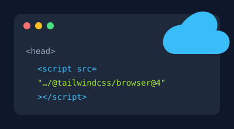

1. Instalación por CDN

Un CDN es un servidor que entrega archivos por
internet. Basta con agregar una etiqueta
<script>
en el <head>:
el navegador lee las clases de la página y genera el CSS. Fija la
versión en la URL para que tu diseño no cambie solo.
<!doctype html>
<html lang="es">
<head>
<meta charset="UTF-8" />
<meta name="viewport" content="width=device-width, initial-scale=1.0" />
<title>Mi página</title>
<script src="https://cdn.jsdelivr.net/npm/@tailwindcss/browser@4.3.3"></script>
</head>
<body>
<h1 class="text-3xl font-bold text-green-600">¡Hola, Tailwind!</h1>
</body>
</html>Resultado